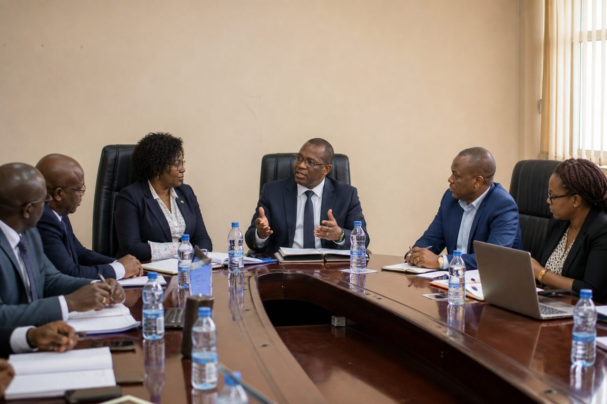

Women Leading Change: Spotlight on Departmental Leadership
The Department recognises leadership that advances inclusion in engineering education, with HOD Dr. Engr. Mrs. Basira Yahaya among voices shaping women-in-STEM conversations across the Faculty.
Read full story